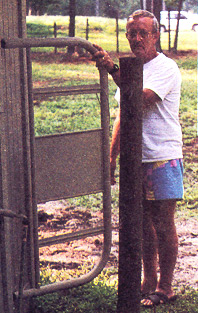
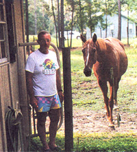

COUNTRY LORE
The photos (next page) show our "farm gate." We have a pasture that is cross fenced with electric wire and we needed a way to get from one side to the other, while still keeping the horses contained. We found an old metal headboard from a bed and it works great! Been using it for 20 years now. How's that for recycling?
That's my husband Frank in the photos, along with Cappy.
Sonia E. Roberts
Doctor's Inlet, Florida
|
 |
 |
|